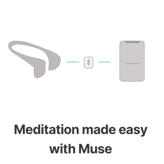
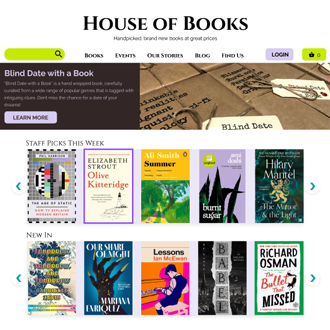

I create portals to experience the world with ease and calmness by rigorous research and innovative designs
I collaborated with 2 UX designers to reenvision a mediation app to understand users’ blockers in mediation habit building & assess partnership with a brainwave headband company. We focused on providing actionable biometric feedbacks and qualitative mood journaling to facilitate internal motivation for long term habit building. 
House Of Books - Concept Ecommerce RedesignI independently redesigned a local independent bookshop’s desktop site to allow e-commerce functions. I carefully designed the navigation, page layout, features, typography and colour scheme to provide assurance, exciting and aesthetic experiences and a human touch.
Clowns In The Sky - Concept UI RedesignI independently redesigned the UI of a children’s charity website to reflect the brand mission and facilitate easier donation and support for afffected families. The optmistic attitude of the charity was effectively conveyed through the use of bright colours, friendly typography and irregular graphics.